Useful links
http://www.dagitty.net/learn/graphs/table2-fallacy.html http://www.dagitty.net/learn/graphs/roles.html
Game on terminology http://www.dagitty.net/learn/graphs/index.html
Notes from the Harvardx course
"This introductory course to causal diagrams teaches you how to translate expert knowledge into a causal diagrams. By the end of the course you will be able:
To draw causal diagrams under different assumptions To identify common biases using causal diagrams To guide data analysis using causal diagrams"
Babies example - Babies born to mothers who smoked are more likely to die - BUT among low weight babies, those whose mothers smoked are less likely to die
- "Use simple pictures tho think about causal questions
- Ok answer comes later!
Correlation versus causation Counderfactuals “Quantifying casual effects requires the comparison of the same or similar treatments” “there may be association without causation” “casusal diagrams represent association and causation simultaneously”
The first lesson of the course introduces you to causal diagrams. You will learn the anatomy of a DAG and the rules of D-separation.
Learning Objectives After this lesson you should be able to:
Identify the features of a causal DAG
Understand the rules of d-separation
Construct a causal DAG that reflects assumptions of how treatments, outcomes, and other factors relate to one another
Distinguish between different structural sources of bias
Estrogen and uterine cancer problem - Assocaition between estrogen and endometrial cancer observed - Estrogen use causes uterine bleeding so women went to Drs to investigate, leading to more diagnoses of otherwise unobserved cancers - ’Referred to as ascertainment bias" - What about restricting to women who bleed?
Causal diagrams - Nodes connected by arrows (or directed edges) - It is acyclic (can’t go in cycles) - Time goes from left to right; the future can’t affect the past - Causal Markov condition (all common causes included) - A square box representes conditioning - DAG for RCT rather than DAG for retrospective cohort study - DAGs represent causal graphs and statistical models - “Casusal graphs do not need to include mediators to estimate the effect of A on Y”
Example: smoking, yellow fingers and lung cancer - A shared common cause between A and Y leads us to expect an association between A and Y, even if A does not cause Y - e.g. there will be an assocation between yellow fingers and cancer, but no yellow fingers does not cause cancer - The flow of association between A and Y is blocked when we condition on a common cause L.
Colliders - Common effects - Common effects of A and Y will not induce an association - Conditioning on a common effect of A and Y will induce an asscoiation between A and Y - This is known as selection bias - Similarly, conditioning on something affected by a collider will induce an association between A and Y
Structural sources of association - cause and effect - common causes - conditioning on common effects Other important source of association, but not structural - Chance
Causal graph theory - Descendents (child/grandchild/parent/grandparent)
D (direction) seperation Rules
"Two variables are D-seperated if all paths between them have been blocked
“If there are no variables being conditioned on, a path is blocked if and only if two arrowheads on the path collide at some variable on the path.”
“Any path that contains a noncollider that has been conditioned on is blocked”
“A collider that has been conditioned on does not block a path.”
“A collider that has a descendant that has been conditioned on does not block a path.”
Faithfulness - If the effect of A and Y is opposite in the population it could be the case that although A causes Y, there is no association between A and Y - “Then we say that the joint distribution of the data is not faithful to the casual DAG”
Confounding Common causes of exposure and outcome result in confounding bias
Confounding is the bias Counfounders are variables used to block the backdoor path(s)
Backdoor path The backdoor path between a hypotesised cause (A) and outcome (Y) is a path that connects A and Y without using any of the arrows that leave from Y.
Backdoor path criterion We can estimate the causal effect of A on Y if we can block all the backdoor path
“To deal with confounding we need to use expert knowledge”
M-bias
Sometimes we won’t have the observed confounder so we can use surrogate or proxy confounders
Ways to control for confounding - These approachesa ssume you can measure all confounders L (not all approaches assume this e.g.) - stratification - multivariate regression - matching - matching with propensity score - inverse probability weighting - standardisation (g-formula) - g-estimation
“Causal DAGs allow us to identify inconsistencies between our beliefs and our actions”
Limitations - can’t show interactions - can’t identify whether causes only apply to some people - don’t convey numerical information
Selection bias
Smoking and dementia example
- For selection to call bias it needs to be realted tot he treatment and the outcome
Example of hormone therapy and cancer: - Case control studies, by design, select based on the outcome, e.g. cancer patient more likely to be selected - If there is an association between hormone therapy and selection then a bias will be introduced. - In this example, controls were selected from women in hospital for hip-fracture (can’t run away from interviewer hahaha) - But hormone therapy reduces the risk of hip-fracture, therefore there was an arrow from hormone therapy to hip fracture, and as a result an open pathway between hormone therapy and selection. - Controls were less likely to have taken hormone therapy. Therefore, even if there was no association between hip fracture and cancer, the selection would make it seem as if there is.
Follow up studies
Eligibility
Loss to folow up
For example of treatment for AIDS - if sicker individuals were more likely to drop out of the study, and sicker individuals were more likely to drop out of the study, this could inuduce a bias for the effect of treatment on AIDS.
Overview
Welcome to HDAT9700 Statistical Modelling II - Causal inference and DAGs!
In this chapter you will start to think about how different models are used based on what sort of questions they are answering.
Prereadings
The pre-reading for this chapter is a tweetorial by epidemiologist Ellie Murray from Boston University School of Public Health.
The tweetorial focuses on “the importance of being clear about your question & using that to drive your methods”. Find it here.
Ellie’s tweetorial was prompted by a disparaging tweet about this study, which explores the relationship between frozen shoulder and the risk of cancer. The disparaging tweet criticised the study for failing to adjust for confounding. In her tweetorial, Ellie explains that this was a descriptive study, not one addressing a causal question and that in fact adjusting for confounding may well have led to the wrong answer to the question at hand.
This pre-reading should help you understand that we always need to be clear about the purpose of our models, as our purpose dictates how we specify the model.
Core reading:
Additional resources:
Shmueli G (2010) To explain or to predict?, Statistical Science, 25(3), 289-310. Also, if you haven’t already, check out the related video, linked at the end of the last tutorial.
dagitty.net: A great website explaing DAGs and related topics, with built-in applets to test your knowledge
The Causal Inference Podcast, hosted by Ellie Murray and Lucy D’Agostino McGowan. Check out the first episode: Talking target trials with Miguel Hernán
Three tasks of data science
The statisical analyses you will perform as Health Data Scientists can be categorised according to three broad tasks of data science.
- Description
- Prediction
- Causal inference
Description involves using statistical models to summarise the relationship between variables. There is no reliance on any underlying causal theory.
Prediction involves using statistical models to predict new or future outcomes (Y) given a set of input values or variables (X).
Causal inference involves estimating the causal effect of an exposure, treatment or intervention. Answering causal questions boils down to comparing outcomes under two or more scenarios, for example, “Would this patient have better chances of survival given treatment A or Treatment B”?
The table below (from Hernán et al 2019) provides examples of the types of questions, data and analysis methods associated with the tasks of description, prediction and causal inference.

Three tasks of data science (from Hernán et al 2019)
“Explanation” or “Causal Inference”?
Causal inference tasks are often referred to as “Explanation” (recall the video at the end of Chapter 1 “To Explain or to Predict?” for example). However, Hernán et al (2019) emphasise that quantifying causal effects doesn’t necessarily equate to explaining causal mechanisms. This is a fair point: knowing that smoking causes cancer is different to knowing which chemicals are carcinogenic, for example.
Variable selection
As you learned from this chapter’s pre-reading, how we go about choosing the variables to include in the model depend crucially on what we are trying to achieve.
For predictive models, the goal is to build a model that accurately predicts the outcome of interest with high sensitivity and specificity, and performs well on new data. In terms of variable selection, the primary consideration is choosing variables that help to achieve this goal (although you would also consider practical things like what variables will be available at the time of prediction). Variable selection could be based on univariate analysis, selecting variables that show a strong association with the outcome, or a selection algorithm like forward, backward or stepwise selection. Many machine learning algorithms will will automatically select (or appropriately weight) the most predictive variables from those available. The covariates in a predictive model all play the same role so we can refer to them collectively as predictors.
For causal models, the goal is to estimate the effect of a given intervention or treatment on a predefined outcome of interest. Really, the only parameter of interest from our causal model is the estimate for that intervention or treatment. In this context, other variables (that may or may not be available in your dataset) have different roles and different names which you might already have come across: confounders, mediators and colliders. Importantly, this means that just because a variable is correlated with the outcome of interest, that doesn’t necessarily mean it is a good candidate to include in the model. In order to understand what variables to include in a causal model, we need to recognise these different types of variables, and understand the role they play in the causal relationship of interest.
Distinguishing between confounders, mediators, colliders and other types of variables relies on expert knowledge about the subject matter in question. There is no algorithm or automated selection procedure that can replace this knowledge. Directed Acyclic Graphs, the main topic of this chapter, are an important tool that help us to formalise and graphically represent expert knowledge, and in doing so can help us to select the variables that should be included in a causal model.
DAGS
Directed Acyclic Graphs (DAGs)
DAGs are graphical tools used to represent the assumptions about causal relationships for a given problem. Representing these assumptions using a graph is an important approach because it allows you to
- Express expert knowledge explicitly
- Facilitate discussions about variable selection with co-authors
- Communicate your assumptions to readers
What is a DAG
DAGs are diagrams comprising nodes (circles or squares) connected by edges (arrows). These diagrams represent assumptions about the causal relationships of interest. The nodes in a DAG represent observed or unobserved variables or constructs while the arrows indicate the direction of the causal relationship between variables.
In this simple DAG, the arrow points from X to Y, representing the asumption that X causes Y.
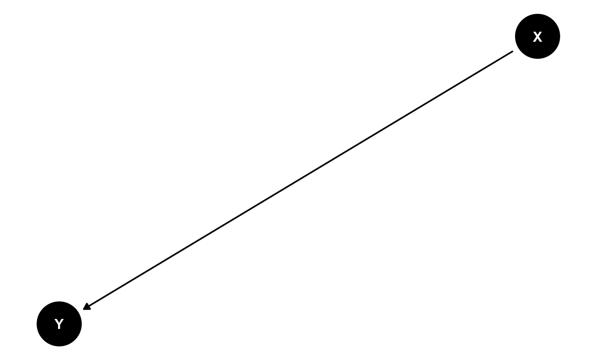
The absense of an arrow between two variables represents the assumption that neither neither variable is causing or caused by the other. In the next DAG, Z causes X and Z causes Y, but X and Y are causally unrelated (there is no arrow pointing from X to Y or from Y to X).
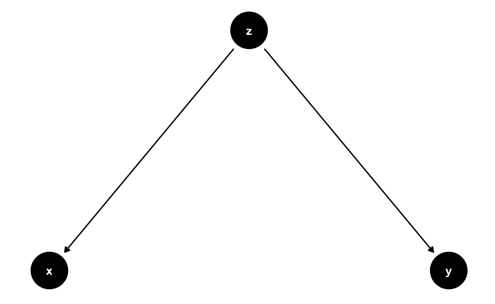
As we will discuss at length, the absense of an arrow between two nodes on a DAG, doesn’t mean that the variables are unassociated in an observational dataset. What if our DAG above represented sunshine, icecream sales and sunburn?
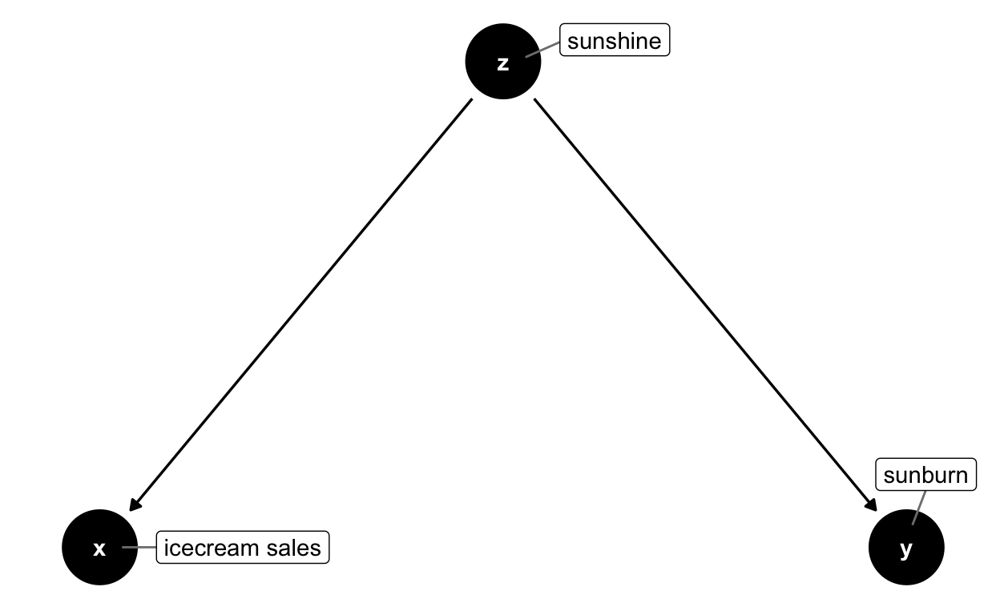
We know that icecream sales definitely don’t cause sunburn, but you wouldn’t be surprised to find an association between icecream sales and incidence of sunburn (a case of correlation not implying causation!). This is a classic example of confounding bias. The relationship between icecream sales and sunburn is confounded by sunshine, inducing an association between the two variables, even though there is no causal relationship.
By using expert knowledge to express our qualitative understanding of causal relationships of interest, DAGs help us to distinguish between association and causation.
Properties of DAGS
There are some formal requirements for a causal DAG. As indicated by the name, DAGs should be directed and acyclic.
Directed The relationship between nodes are directional. The arrows indicate the direction of causality.
Acyclic DAGs must not have cycles between the nodes, i.e. a variable should not “cause” itself, either directly or through other variables. You can spot a cyclic relationship if it is possible to start at one node and follow the directional arrows to arrive back at the same node.
Below is an example of a cyclic graph. The logic here is tempting: good health will improve educational outcomes, high levels of education will increase income and higher income can improve health. However this results in a cyclic graph: it is posible to start at any node and follow the directional arrows to return to that node, for example the path health \(\rightarrow\) education \(\rightarrow\) income \(\rightarrow\) health.
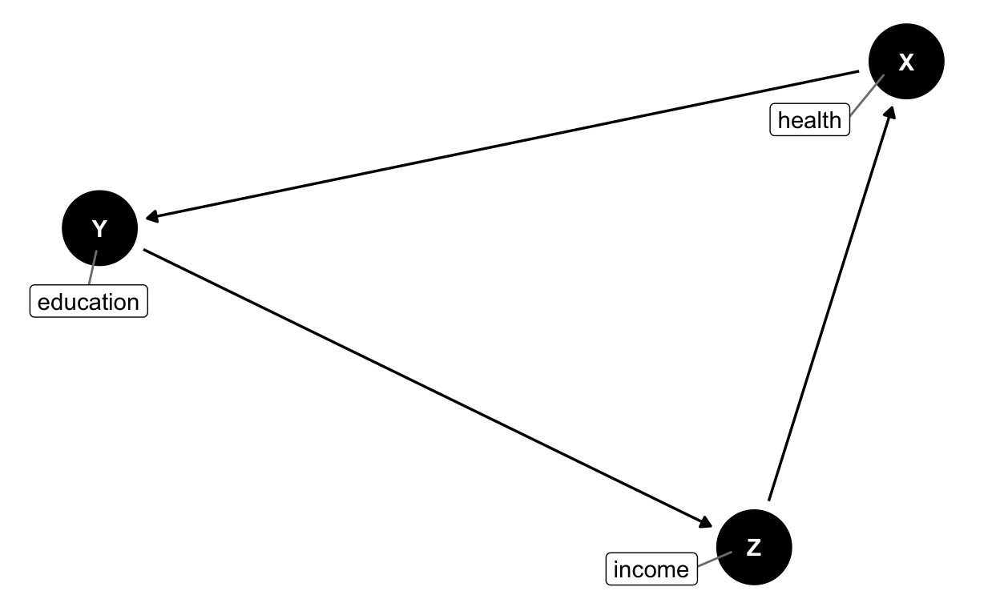
This would suggest that health status causes health status. Because this graph is cyclic and not acyclic, it does not meet the formal requirements for a DAG. Often, we can untangle cyclic relationships by considering the timing of causes and effects. For example, the relationship between health, education and income could be re-expressed more meaningfully by considering health status at different points in time, as represented below.
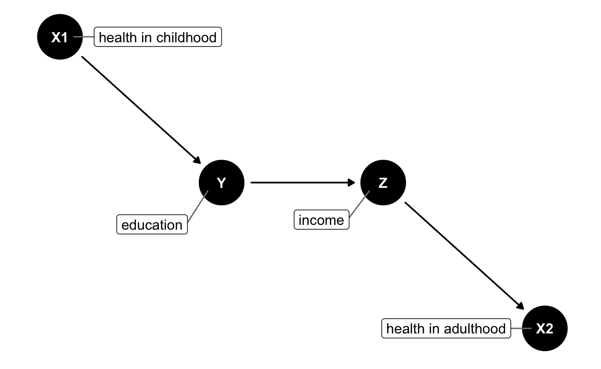
This is a now valid DAG because it is directional and acyclic. Note the DAG above follows the convention that time moves from left to right.
The causal Markov assumption
A further property of a causal DAG is the causal Markov assumption. Although this sounds a bit scary, it is quite simple (cf Hernán and Robins 2020 Chapter 6 Technical Point 6.1 for a formal definition). It means that a common cause of any pair of variables on a DAG should also be included in the DAG.
As an example, let’s say we are interested in the causal relationship between between aspirin and pulmonary embolism, in a setting where aspirin is more often prescribed to patients with high blood pressure. In this case, high blood pressure is a common cause of both aspirin usage and pulmonary embolism: patients with high blood pressure are more likely to be taking aspirin and high blood pressure increases the risk of a pulmonary embolism. To satisfy the causal Markov assumption, blood pressure should be included in the DAG.
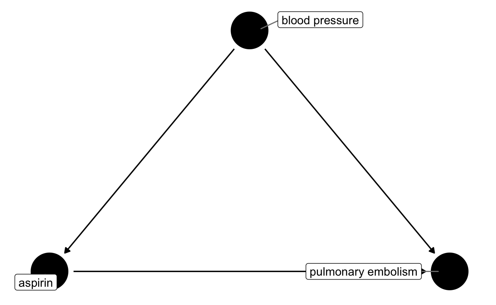
Now, imagine a different setting where aspirin has been administered as the intervention in a randomised control trial. In this case, patients are randomly assigned, so there is no causal relationship between blood pressure and taking aspirin. Blood pressure still increases the risk of having a pulmonary embolism, but it is no longer a common cause of taking aspirin and having a pulmonary embolism so it is not necessary to include on the DAG.
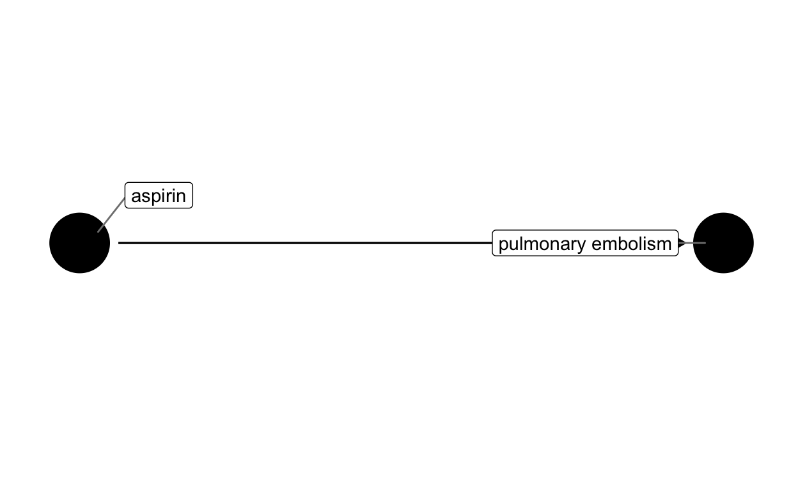
Other terminology
Consider the DAG below which an investigator might use when postulating the causal relationship between exercise and melanoma. We will use this DAG to explain some additional useful terminology.
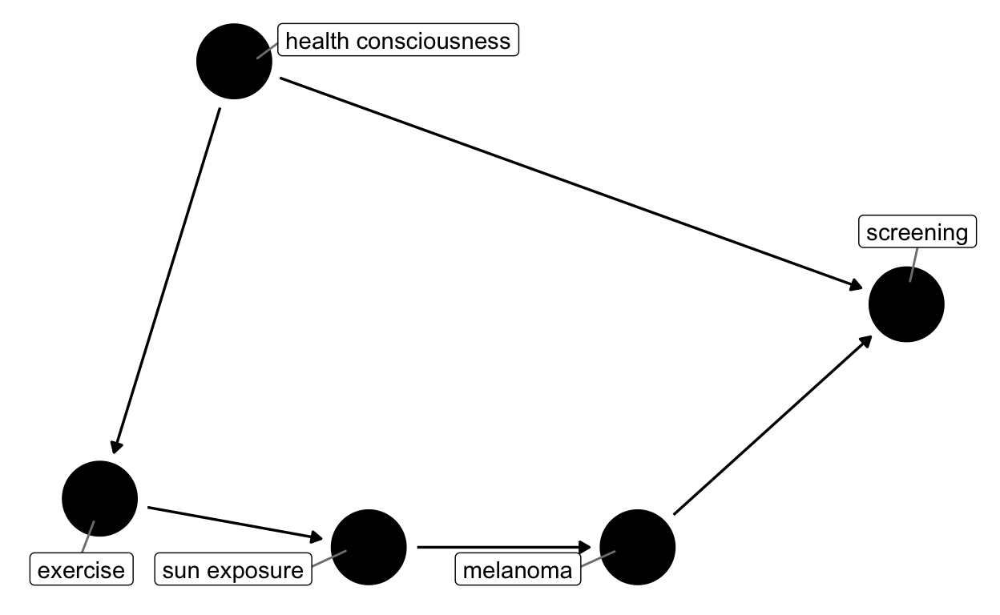
Path
A path between two nodes in a DAG is a route that connects the two nodes, visiting no node more than once. The arrows don’t have to point in the same direction, but if they do the path is considered a causal path.
Below are examples of paths:
- exercise \(\leftarrow\) health consciousness \(\rightarrow\) screening (Not a causal path)
- health consciousness \(\rightarrow\) screening \(\leftarrow\) melanoma (Not a causal path)
Below are examples of causal paths
- exercise \(\rightarrow\) sun exposure \(\rightarrow\) melanoma
- sunexposure \(\rightarrow\) melanoma
Parent
The parents for a given node in a DAG are the set of variables with an arrow pointing directly into that node. For example, the parent of melanoma is sun exposure.
Child
A child of a given node X is any variable with an arrow pointing directly from X. For example, exercise and screening are child nodes of health consciousness.
Descendants and Ancestors
The ancestors of a node are any nodes on the causal path leading to that node. The descendants of a node are any nodes that can be reached by following causal paths.
- The ancestors of sun exposure are exercise and health consciousness
- The descendants of health consciousness are exercise, sun exposure, melanoma and screening
Confounder
A confounder is a common cause of two nodes (usually the common cause of an exposure and an outcome) * Health consciousness is a confounder of exercise and screening
Mediator
A mediator is a node that lies on the causal path between two other nodes.
- Sun exposure is a mediator on the path between exercise and melanoma
Collider
A collider is a node with two directional arrows pointing towards it.
- Screening is a collider on the path health consciousness \(\rightarrow\) screening \(\leftarrow\) melanoma
Quiz
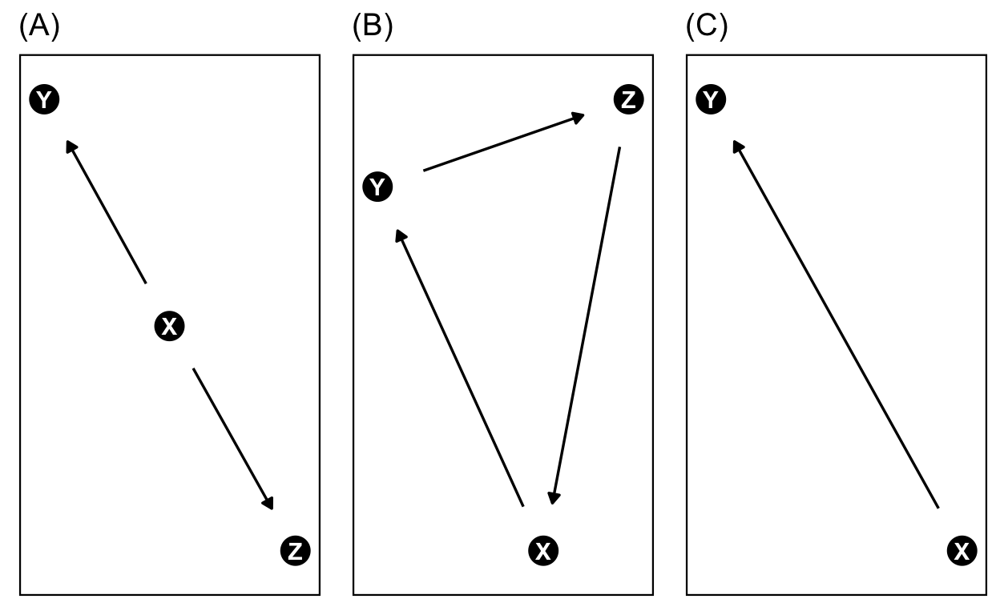
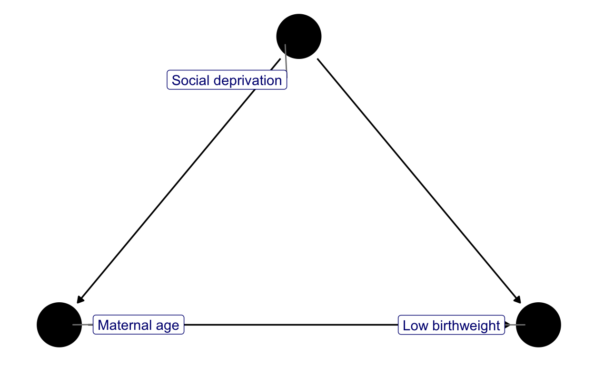
Want more?
Try testing yourself on DAG terminology using this applet on dagitty.net.
Confounding variables
Recall the definition
Confounding arises when there is a variable Z that influences the exposure of interest X and the outcome of interest Y. We say that the relationship between X and Y is confounded and that Z is the confounder.
Depending on the discipline, confounding is also referred to as a third variable or a lurking variable.
Example
The relationship between mother’s age at birth (exposure) and child’s birth weight (outcome) may be confounded by mother’s socioeconomic status.
How does this look in a DAG?
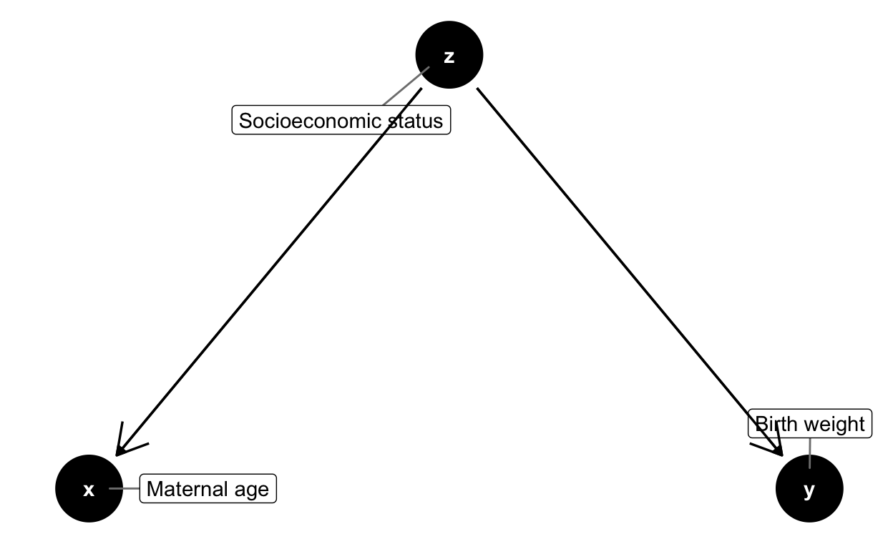
Mediating variables
Definition
A mediating variable M is a variable that lies on the causal pathway between an exposure X and outcome Y.
Example
A researcher might hypothesise that quality of sleep is a mediating variable between exercise (exposure) and mood (outcome).
How does this look in a DAG?
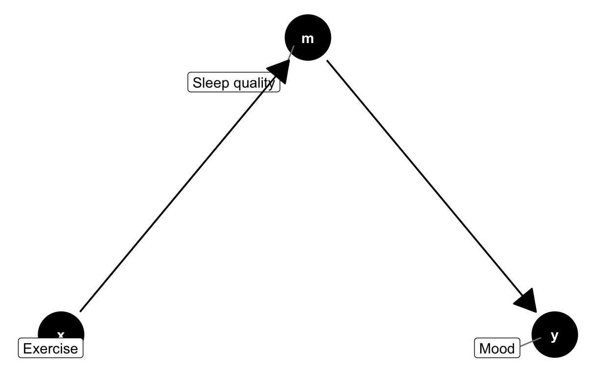
Muddling mediation
Mediation often gets confused with two closely related epidemiological concepts, interaction and effect modification. Below is a quick summary distinguishing these three terms, adapted from the paper Corraini, Priscila, et al. “Effect modification, interaction and mediation: an overview of theoretical insights for clinical investigators.” Clinical epidemiology 9 (2017): 331
The table below provides a quick summary of these three concepts. If you come across these terms and need a reminder please check out the paper!
| Type of assessment | Aim of the assessment | Example question |
|---|---|---|
| Effect modification | Separate exposure effects according to another variable | Does the new drug have a different effect for men compared to women? |
| Interaction | Evaluate individual and joint effects of exposures | Does drug A work better if the patient is also taking drug B? |
| Modification | Evaluate direct and indirect effects of exposures | Does exercise improve mood directly, or does exercise improve sleep and then better sleep results in improved mood? |
Collider variables
Definition
A collider is a common effect of two variables.
Example
Suppose a researcher is interested in whether respiratory syncytial virus infection (exposure) during infancy causes asthma in early childhood (outcome). In this case, admissions to the Emergency Department (ED) during early childhood would be a potential collider, because both RSV and asthma will increase the probability of ED admission during early childhood.
How does this look in a DAG?
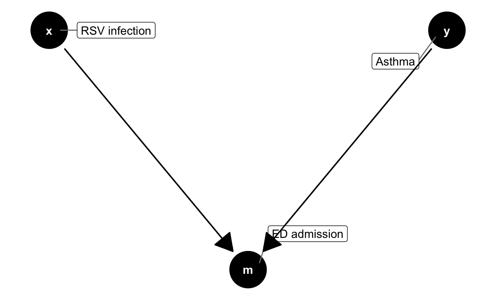
As we will see, identifying colliders is important because controlling for a collider can introduce bias. To continue the above example, controlling for the number of ED admissions during early childhood would actually bias estimates of the relationship between RSV infection and asthma.
Explore this further
You can explore this example and the concept of collider bias further using this interactive Shiny app. The app can also be launched by entering hdat9700tutorials::run('collider-bias') at the console.
D-separation
Now that you know how to represent and recognise different types of relationships in a DAG, how can a DAG help us to choose what variables to include in a causal model? The answer lies in the concept of d-separation.
Definition: Two variables in a DAG are said to be d-separated if there are no open backdoor paths between them.
This definition introduces two new concepts that we also have to define: backdoor paths, and what makes an open path.
1. Backdoor paths
Definition: A backdoor path between X and Y is a path that leaves through a parent of X and points to Y.
For example, the path icecream sales \(\leftarrow\) sunshine \(\rightarrow\) sunburn is a backdoor path between icecream sales and sunburn. 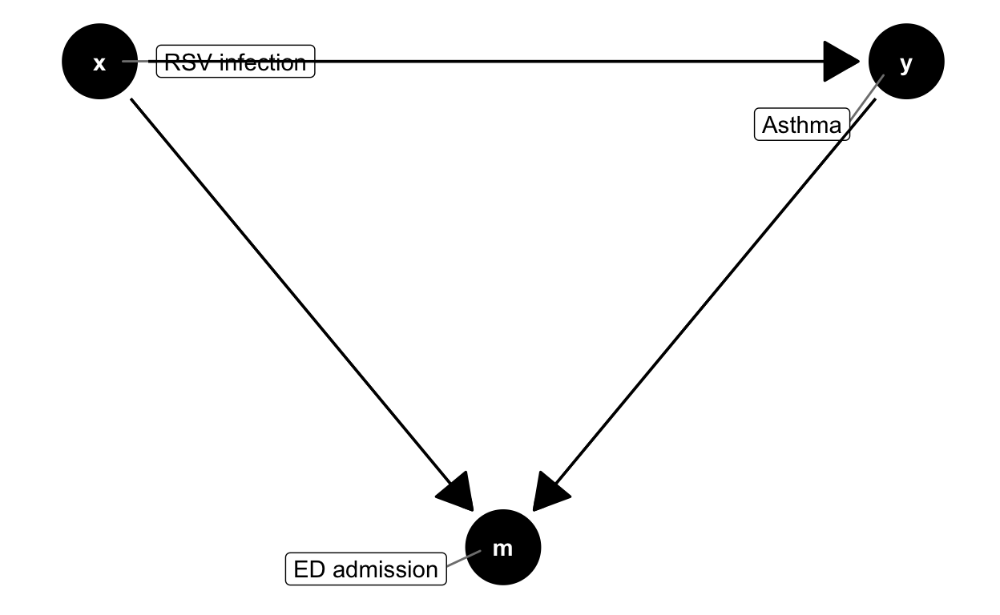
You will recognise this as an example of confounding. In this case, the presence of sunshine induces a correlation or dependence between icecream and sunburn. The “d” in d-connected stands for dependence!
2. Open paths
A path between two nodes X and Y is open if the path carries information or dependence between X and Y. We can open or close a path between two nodes by controlling for an intermediate variables. In most contexts, conditioning will mean stratifying by a variable or adding the variable to a regression model.
Importantly, however, whether or not controlling for an intermediate variable Z opens the the pathway or closes the pathway depends on the role of Z. The table below outlines what happens in three different scenarios.
| DAG | Role of Z | Status before controlling for Z | Effect of controlling for Z |
|---|---|---|---|

|
Mediator | Path between X and Y is OPEN | CLOSES path between X and Y. |

|
Confounder | Path between X and Y is OPEN | CLOSES path between X and Y |

|
Collider | Path between X and Y is CLOSED | OPENS path between X and Y |
Note that conditioning on a mediator or a confounder will CLOSE the path between X and Y. In the case of colliders, the path is closed unless we condition on Z in which case we OPEN the path between X and Y.
How does this all help?
Having read through the section above, you should be comfortable with the idea of:
- A backdoor path
- An open or closed path
Now, recall the definition of d-separation:
Two variables in a DAG are said to be d-separated if there are no open backdoor paths between them
Apply the concept of d-separation to inform variable selection in causal models
In order to estimate the causal effect of an exposure X on an outcome Y, we have to make sure that X and Y are d-separated. That is, there can be no open backdoor paths between X and Y.
Quiz
Selection Bias
Quiz
M-Bias
Tweetorial from Dr Ellie Murray ([@EpiEllie](twitter.com/EpiEllie)) focuses on “applying conclusions about causation to results obtained via methods designed only for finding correlations”. This example shows a real-world example of M-bias in play, which erroneously led some to conclude that being a current smoker was protective of COVID-19 hospital deaths. Find it here
Exercise
Draw DAG consistent with two different hypotheses and estimate the corresponding model
Extra: Coding DAGs in R
Coding DAGS in R: Overview
The DAGs in this tutorial are created using the ggdag package. If you are interested in learning more about how to draw DAGs in this way, check out the vignette on the package here.
Demonstration
Navigate through the slides below to see an example of ggdag in action.
Note that:
- By default, the position of nodes is random. You can specify fixed node positions using
coords =. - The funtion
dagify()is used to define the relationships between nodes. E.g.y ~ xindicates that an arrow will point from x to y.
- Passing the output of
dagify()tonode_parents(x)creates a dataframe distinguishing between child and parent nodes of x. geom_dag_point()andgeom_dag_edges()plot the results.- Applying
theme_dag()provides a nice clean plot.
Try it yourself
Try experimenting with the code below to create your own DAG.
# specifying fixed coordinates means that the nodes of the DAG will
# always be in the same in the same place. If we don't include this,
# the nodes will be randomly arranged each time the DAG is drawn
coords <- list(
x = c(x = 0, y = 1, a = 1, b = 0),
y = c(x = 0, y = 1, a = 0, b = 1)
)
dagify(y ~ x + a + b,
x ~ a + b,
exposure = "x",
outcome = "y",
coords = coords) %>%
node_parents("x") %>%
ggplot(aes(x=x, y=y, xend=xend, yend=yend, color=parent)) +
geom_dag_point() +
geom_dag_edges() +
geom_dag_text(col = "white", size = 6) +
geom_dag_edges_link(arrow = grid::arrow()) +
theme_dag() +
scale_color_hue(
breaks = c("parent", "child")
) You might notice that this code differs slightly from the code in the flipbook slides above. The flipbook code uses slow ggplot as described by the flipbookr package developer Evangeline Reynolds in her blog. Slow ggplot is an approach to writing ggplot code that focuses on incremental changes, for example, instead of specifying aes(x=xy, y=y, xend=xend, yend=yend, color=parent) in a single line, slow ggplot separates out each aesthetic element to a separate line, to emphasise how that element affects the graph. The editable code above dispenses with the slow ggplot syntax, and is more typical of how you will write R code in the wild.